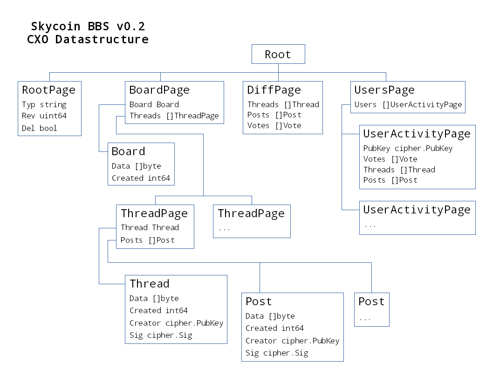

Cela fait un peu plus d’un mois depuis la dernière publication de la version 0.1 et la version 0.2 est bientôt prête !
Les changements sont les suivants :
- Utilise la dernière version de CXO (base de données auto-réplicante pair à pair).
- Réimplémentation des objets et de l’arbre du CXO (en préparation pour de nouvelles fonctionnalités)
- Introduction à un module de “vues” pour faciliter l’implémentation de différentes façons de “visualiser” le contenu.
- Implémentation initiale de suivi/blocage d’un utilisateur
- Interface utilisateur complètement réaménagée
Modifications du CXO
CXO a été sérieusement remanié pour être plus rapide et plus stable. L’API a été conçue pour mieux fonctionner avec les tableaux de hash - avec un temps d’accès constant, une réplication plus rapide et la possibilité d’accéder à un élément directement avec un hash donné.
Ces modifications ont également incité BBS à modifier la majorité de son code source.
Changements de la structure de données du CXO
Les changements de la structure de données s’adressent aux problèmes suivants :
- Implémenter une structure qui permet aux données de l’utilisateurs d’être migrer vers ses propres racines distinctes dans le futur.
- Déterminer facilement les “diffs” entre les séquences racines (modifications). Cela sera utile pour compiler des vues et fournir des mises à jour en temps réel à l’utilisateur final.
- Déterminer facilement le type d’objet racine pour les différents types de racine

L’objet RootPage détermine le type de racine. Pour l’instant, toutes les données sont accumulées sous un arbre racine par groupe. À l’avenir, les sujets et les utilisateurs auront leurs racines individuelles.
À l’avenir, «BoardPage» contiendra une liste de clés publiques au lieu d’hrefs pour les sujets, car les sujets auront leurs propres racines. Cela rend les sujets faciles à migrer entre les groupes.
DiffPage est utilisé pour déterminer les changements entre les séquences racines pour la racine deBoardPage. Il s’agit essentiellement d’un ensemble de tableaux toujours croissants, où une augmentation de longueur est interprétée comme des changements.
UsersPage deviendra une liste de clés publiques (elles seront comme des «participants» au sein d’un groupe). Chaque utilisateur aura sa propre racine.
Impémentation du module de Vues
Une vue est principalement juste une interface :
type View interface {
// Init initiates the view.
Init(pack *skyobject.Pack, headers *pack.Headers, mux *sync.Mutex) error
// Update updates the view.
Update(pack *skyobject.Pack, headers *pack.Headers, mux *sync.Mutex) error
// Get obtains information from the view.
Get(id string, a ...interface{}) (interface{}, error)
}Actuellement, toutes les vues compilées sont stockées en mémoire. Mais cela deviendra peu pratique lorsque notre base d’utilisateurs augmentera. Les vues seront stockées dans un emplacement clé->valeur sur disque dans les versions ultérieures.
Pour la version 0.2, il existe deux implémentations View; un pour le contenu (groupes / sujets / messages / votes) et un pour la compilation d’une liste de suivi/blocage par utilisateur.
Une nouvelle expérience utilisateur
Au moment de cette publication, ceci est presque terminé. Voici une vidéo sur youtube de ce travail en cours:

Pour être tenu au courant du développement de Skycoin BBS, rejoignez notre Communauté Skycoin BBS sur Telegram ou continuez à surveiller notre blog.